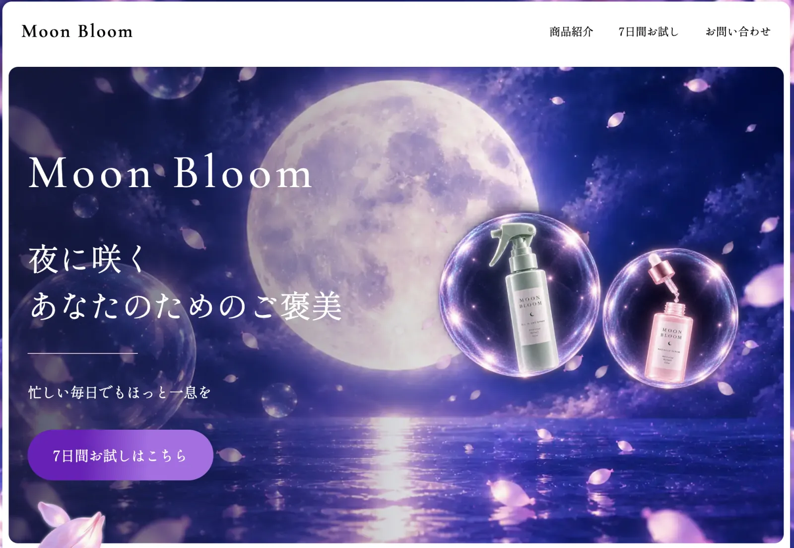
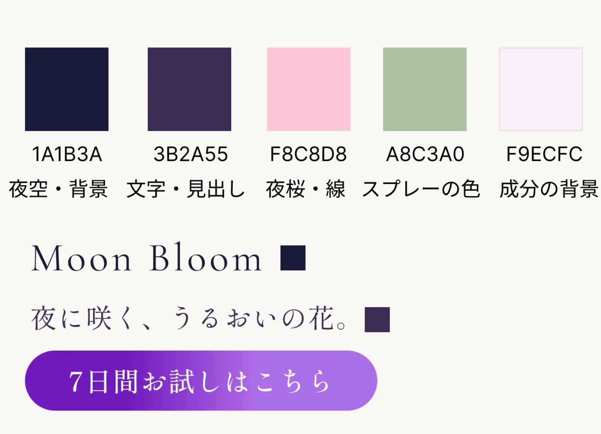
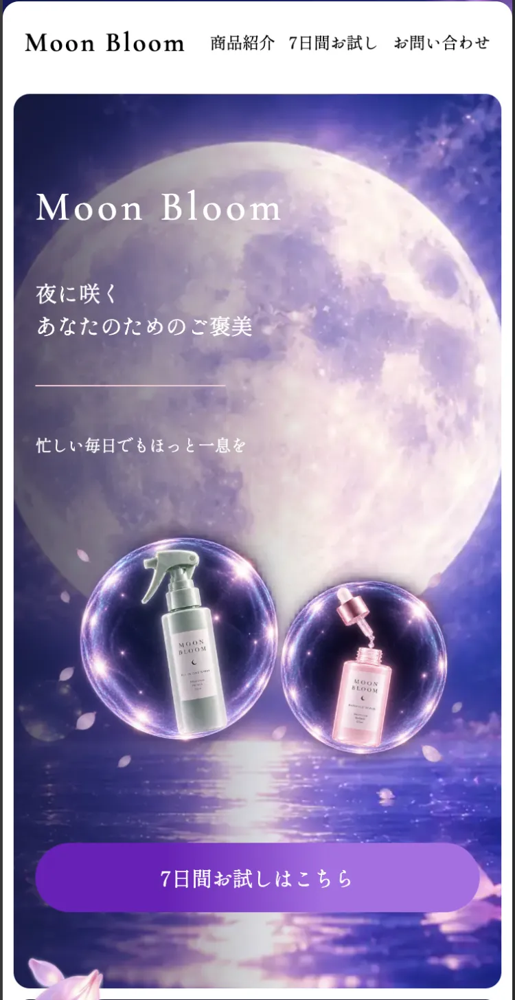

Moon Bloom（架空スキンケアのLP）
#LP
※ 架空のブランドです。商品・価格・画像はすべてオリジナルで、実在しません。
- 対応内容
- デザイン・コーディング
- 制作期間
- 2026年10月7日〜10月23日（コーディング 約2週間半）
- 使用ツール
- Figma／VSCode／GitHub（Pages）／Live Server／ChatGPT（画像生成）

制作要件
ポートフォリオ用に制作した、架空のスキンケアブランド「Moon Bloom」のLPです。商品は、柑橘の香りのオールインワンスプレーと導入美容液。ゴールは「7日間お試しセット（¥980）」への申し込みです。
- ターゲット：20代後半〜30代の女性（社会人・専業主婦）
- 見るとき：楽で効果のあるスキンケアを探しているとき
- 大事にしていること：気軽に試せるか、楽か、効果があるか
情報設計
ターゲットが大事にしている「気軽に試せる・楽・効果がある」の順に、知りたいことに答えていく流れにしました。
- FV：商品と「7日間お試し」ボタンを最初に見せる（気軽に試せる）
- オールインワンスプレー：時短・ベタつかない・柑橘の香り（楽）
- 成分：うるおいや肌を整える成分を紹介（効果がある）
- 導入美容液：もっとケアしたい人へ、もう1品のご提案
- お試し価格・申し込み → よくある質問 → お問い合わせ（不安をなくしてから申し込みへ）
デザインコンセプト
夜桜・月・紫の夜空で、「忙しい毎日の終わりの、夜のごほうび時間」を表しました。見出しには、上品でやわらかい印象の Shippori Mincho と Cormorant Garamond を使っています。
背景はこいネイビーで夜の静けさを出し、夜桜のピンクと、スプレーのセージ色をアクセントにしました。

デザインの工夫
- シャボン玉に入った商品をFVに置き、ひと目で何の商品かわかるようにしました
- 「7日間お試しはこちら」ボタンを最初の画面に置き、すぐ申し込めるようにしました
- スマホ・PCそれぞれで見やすいよう、レイアウトを調整しました

表示速度の改善
- 測定：スマホで、いちばん大きい画像が出るまで（LCP）10.2秒かかっていた
- 原因：画像が合計 31MB と重かった
- 改善：画像を WebP にする・画面の大きさに合った画像を出す（srcset）・フォントの読み込み方を見直す
- 結果：画像 31MB → 0.9MB、LCP 10.2秒 → 7.9秒
振り返り・今後の改善
画像を一時保存しておく期間（キャッシュ）は、GitHub Pages では自分で設定できないため直せませんでした。レンタルサーバーに移したときに設定して、さらに速くしたいです。
サイトの画像は、ChatGPT の画像生成で作ったオリジナルのものです。